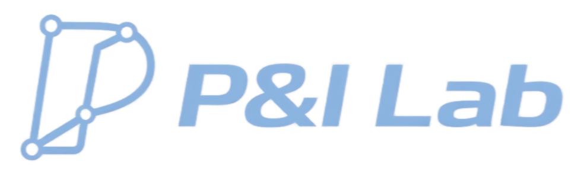
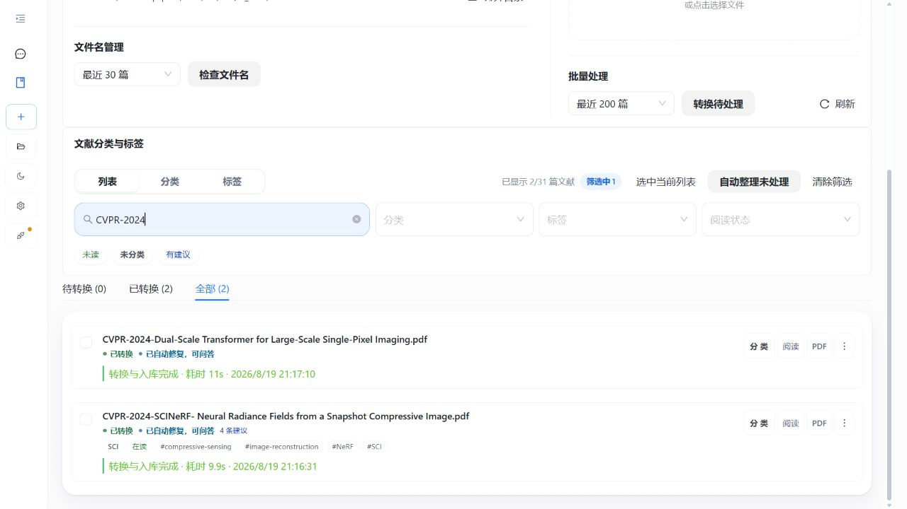
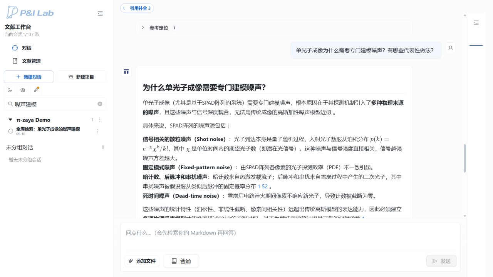
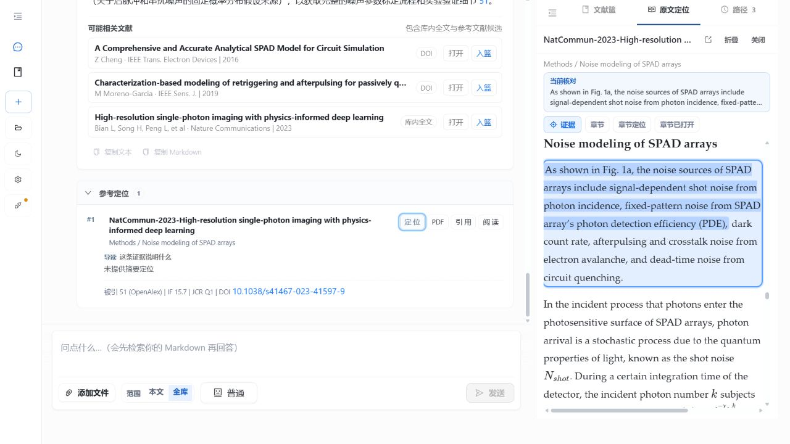
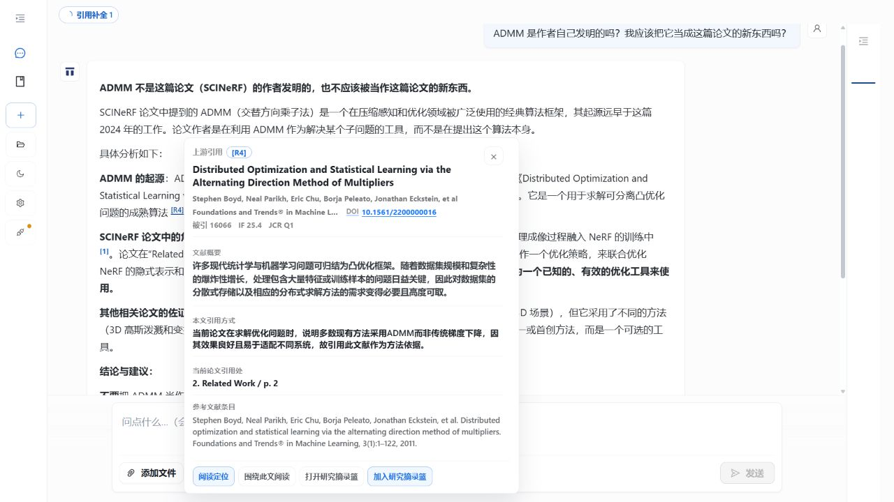
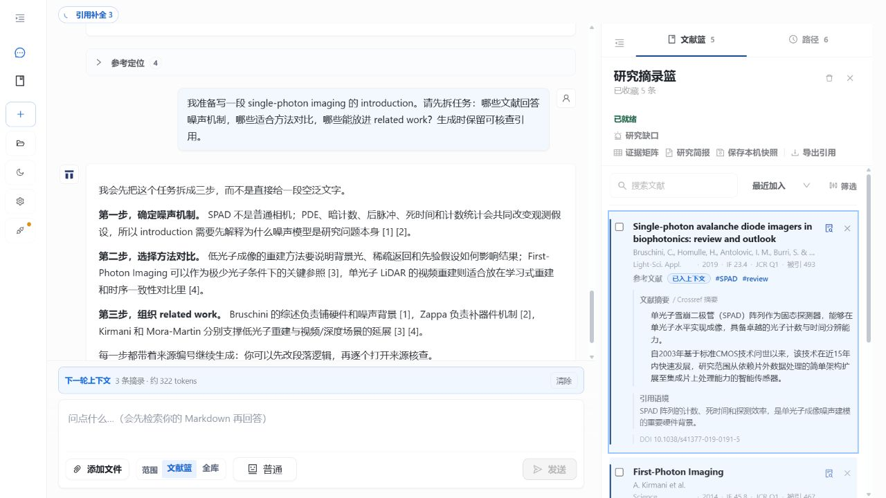

BUILT BY P&I LAB从 PDF 文库、跨文献问答，到原文核查与研究材料整理：Pi_zaya 不只负责“回答论文”，它更在意每句话从哪里来、还能怎样继续用。
读论文时，我经常遇到同一种困境：资料越来越多，真正需要的不是又一段流畅总结，而是快速弄清楚——这个结论来自哪篇论文？原文在哪一页？不同方法是否在相同条件下比较？
答案、PDF、摘录和写作笔记散落在不同窗口里，回头核对一次，常常比得到答案本身更费时间。
所以，我做了 Pi_zaya。
它用本地论文库回答问题，并把回答关联到论文、章节、页码和原文摘录。
01 / BUILD A LIBRARY
导入 PDF 后，Pi_zaya 会自动将论文转换为便于 AI 检索和引用的结构化 Markdown，尽量保留标题层级、页码、公式、图片和参考文献。转换完成并通过质量检查后，论文会加入本地文献库，可以按单篇论文或整个文献库提问。
每篇论文的转换和入库状态都可以直接查看。结构或索引不满足条件的论文会显示“需要重转”，完成重转或修复后才能用于检索。

实际文献库：可查看 PDF 是否完成转换、是否已经入库，以及能否用于问答。
02 / A REAL QUESTION
下面不是宣传页里的示意文本，而是 Pi_zaya 对本地论文库的一次实际问答。它把散粒噪声、固定模式噪声、暗计数、后脉冲、串扰和死时间噪声拆开说明，并保留了对应的泊松分布公式。

真实回答片段：同时列出物理机制、公式及其对重建假设的影响。
03 / BACK TO THE PAPER
展开回答依据，可以看到对应论文、章节、页码和 DOI。点击“定位”，阅读器会打开由 PDF 转换得到的 Markdown 正文，并直接跳到支持当前回答的段落。标题层级、页码和公式等结构会保留，相关句子同时高亮。

实际定位画面：右侧是转换后的 Markdown 正文，保留章节与页码并高亮当前证据。
我的目标不是让读者“相信这个回答”，而是让核查成本足够低：看完结论，顺手就能回到原文。
04 / FOLLOW THE REFERENCES
研究问题经常不是“这篇论文说了什么”，而是“这个方法是谁提出的”“作者沿用了哪项前人工作”。当问题涉及方法来源、研究沿革或相关工作时，Pi_zaya 可以沿论文中的参考编号继续追踪上游文献。

实际运行画面：关于 ADMM 的追问打开了对应上游论文，并保留“当前论文如何引用它”的语境。
卡片把作者、年份、DOI、被引情况、文中位置和参考文献条目放在一起。你可以继续围绕它阅读，也可以把它加入研究摘录篮。
05 / KEEP THE USEFUL PART
研究摘录篮不是一个只有标题的收藏夹。展开卡片后，可以看到摘要、引用语境、标签、DOI 和它在当前问题中的作用；选中的文献还可以直接成为下一轮问答的范围。

实际项目画面：左侧组织 introduction，右侧展开一篇已筛选文献，摘要与引用语境没有在收藏后丢失。
项目中保存的材料可以直接用于后续问答，也可以导出引用清单和本机快照，继续服务于阅读整理与研究写作。
WHO IS IT FOR
大量阅读 PDF，需要快速找到结论和原文位置
写 related work，希望理清方法来源与引用关系
做方法比较，需要核对实验条件、指标和结论边界
希望文库和研究材料优先保存在自己的电脑上
它不会替代研究者判断，也不能保证每一篇复杂 PDF 都完美转换。它做的，是把来源、缺失和不确定性更早地暴露出来，让判断建立在更容易核查的材料上。
DOWNLOAD
当前发布版本为 Windows x64。两种成品均内置运行环境，无需另装 Python 或 Node.js，并附中文版 README。
推荐大多数用户：安装版
下载 Setup，按安装向导完成后，从开始菜单或桌面快捷方式打开。
免安装或用于排障：便携 ZIP
完整解压后，双击 Pi_zaya.exe；不要在压缩包预览窗口里直接运行。
首次使用需要配置自己的模型 API Key。公测版安装器暂未进行商业代码签名；请只从项目 Release 下载，并使用随附的 SHA-256 文件核对完整性。
这是 Pi_zaya 的第一次公开介绍，也只是一个开始。欢迎下载试用，也欢迎告诉我：你处理文献时，最费时间的环节是什么？